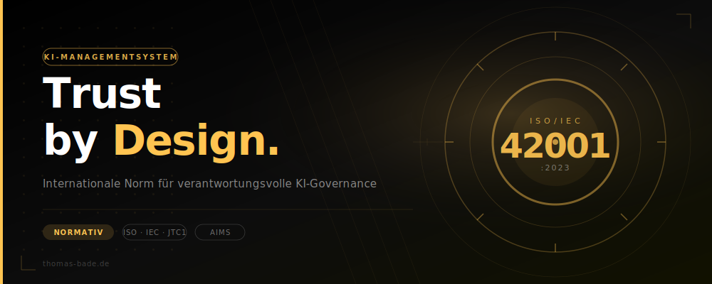

ISO 42001 KI-Managementsystem

Das KI-MIG ist seit 29.07.2026 in Kraft (BGBl. 2026 I Nr. 223) und benennt die Bundesnetzagentur als zentrale Marktüberwachungsbehörde für KI-Systeme in Deutschland. ISO/IEC 42001 ersetzt keine Rechtspflicht, liefert aber ein anerkanntes Managementsystem (AIMS), mit dem sich die von der Bundesnetzagentur im Rahmen ihrer Befugnisse (§ 11 KI-MIG) anforderbare technische Dokumentation strukturiert nachweisen lässt.
ISO 42001 – Trust by Design und KI-Governance
Kurze Einführung · von Thomas Bade
Transkript anzeigen
Willkommen zu dieser Einführung in die ISO/IEC 42001, der ersten internationalen Norm für künstliche Intelligenz Managementsysteme.
Künstliche Intelligenz verändert derzeit nahezu alle Bereiche des Gesundheits- und Sozialwesens.
Doch mit dem Einsatz von künstlicher Intelligenz steigen auch die Anforderungen an Governance, Transparenz und Verantwortung.
Die ISO 42001 ist die erste internationale Norm für künstliche Intelligenz Managementsysteme.
Sie bietet Organisationen einen strukturierten Rahmen, um KI-Systeme sicher, nachvollziehbar und verantwortungsvoll zu planen, einzusetzen und kontinuierlich zu überwachen.
Ähnlich wie die ISO 9001 für Qualitätsmanagement oder die ISO 27001 für Informationssicherheit beschreibt die Norm Anforderungen an Führung, Risikomanagement, Prozesse, Dokumentation und kontinuierliche Verbesserung.
Im Mittelpunkt steht die Frage, wie Chancen und Risiken von künstlicher Intelligenz systematisch gesteuert werden können.
Besonders relevant sind dabei die Auswirkungen von künstlicher Intelligenz auf Menschen, Organisationen und die Gesellschaft.
Die Norm fordert deshalb eine strukturierte Bewertung möglicher Risiken und geeignete Maßnahmen zur Kontrolle und Überwachung von KI-Systemen über ihren gesamten Lebenszyklus.
Wichtig zu wissen:
Die ISO 42001 liegt derzeit ausschließlich als offizielles englischsprachiges Originaldokument vor. Sie ist aktuell keine harmonisierte europäische Norm im Sinne des EU AI Acts.
Die Inhalte dieser Seite dienen daher ausschließlich der Information und Schulung und ersetzen weder die Originalnorm noch eine rechtliche oder regulatorische Beratung.
Diese Übersicht soll Ihnen helfen, die Grundprinzipien der Iso Norm zu verstehen und erste Ansatzpunkte für eine verantwortungsvolle Governance in Ihrer Organisation zu identifizieren.
Trust by Design – weil erfolgreiche künstliche Intelligenz mehr braucht als Technologie. Sie braucht Governance.
Trust by Design – KI-Governance mit ISO 42001:2023
Die erste internationale Norm für KI-Managementsysteme (AIMS) schafft einen strukturierten Rahmen für verantwortungsvolle KI-Governance – für alle Sektoren, auch Gesundheits- und Sozialwesen.
Die folgende Übersicht dient ausschließlich Schulungs- und Informationszwecken und basiert auf der internationalen Norm ISO/IEC 42001:2023.
Trust by Design – KI-Governance mit ISO/IEC 42001:2023
Die ISO/IEC 42001:2023 ist die erste internationale Norm für KI-Managementsysteme (Artificial Intelligence Management System – AIMS).
Zum Zeitpunkt der Veröffentlichung dieser Übersicht liegt die Norm ausschließlich als offizielles englischsprachiges Originaldokument der ISO und IEC vor.
Eine deutsche Fassung dieser Website stellt keine offizielle Übersetzung der Norm dar. Darüber hinaus handelt es sich derzeit nicht um eine harmonisierte europäische Norm im Sinne der EU-KI-Verordnung (EU AI Act) und sie begründet keine Konformitätsvermutung nach europäischem Recht.
Die nachfolgenden Inhalte dienen ausschließlich der allgemeinen Information, Einordnung und Schulung. Sie ersetzen weder die Originalnorm noch eine rechtliche, regulatorische oder normative Beratung.
Für Zertifizierungen, Audits, Konformitätsbewertungen oder rechtliche Nachweise ist ausschließlich die jeweils gültige Originalfassung der ISO/IEC 42001:2023 maßgeblich.
Die internationale Norm für KI-Managementsysteme
ISO/IEC 42001:2023 ist die erste globale Norm, die definiert, wie Organisationen KI-Systeme verantwortungsvoll entwickeln, bereitstellen und nutzen sollen – unabhängig von Branche, Größe oder KI-Technologie.
Organisationsweiter Geltungsbereich
Zertifiziert KI-Governance-Prozesse eines Unternehmens – nicht einzelne Produkte. Gilt entlang der gesamten KI-Wertschöpfungskette.
Fokus Risikomanagement
KI-spezifische Risiken – Bias, Sicherheit, Datenschutz, Transparenz – werden systematisch identifiziert, bewertet und behandelt.
Lebenszyklus-Kontrolle
Von der Anforderungsspezifikation über Design, Training, Validierung bis zu Betrieb, Überwachung und Stilllegung – jede Phase ist geregelt.
Kontinuierliche Verbesserung
High-Level-Struktur (HLS) fordert den PDCA-Zyklus – Plan, Do, Check, Act – für das gesamte KI-Management.
Trust by Design – Vertrauen von Anfang an
„Trust by Design" – angelehnt an „Secure by Design" und „Privacy by Design" – bedeutet: Vertrauenswürdigkeit, Fairness, Transparenz und Verantwortlichkeit werden nicht nachträglich ergänzt, sondern von Beginn an in KI-Systeme eingebaut.
Stakeholder-Einbindung
Betroffene, Nutzer und Regulatoren in den gesamten KI-Lebenszyklus einbeziehen.
Führungsverantwortung
Oberste Leitung trägt Verantwortung: Ressourcen, Richtlinien, Aufsicht.
Risiko & Vertrauen
KI-spezifische Risiken: Bias, Sicherheit, Datenschutz – systematisch managen.
Transparenz & Erklärbarkeit
Dokumentation und nutzerorientierte Erklärungen maximieren das Vertrauen.
Kontinuierliche Überwachung
Monitoring, Audits und Incident-Response sichern die Vertrauenswürdigkeit im Betrieb.
Ethische KI
Fairness, Compliance und gesellschaftliche Verantwortung in Richtlinien verankern.
Adaptives Verbessern
KI-Governance und -Systeme auf Basis von Feedback und neuen Standards anpassen.
Menschliche Aufsicht
Human Oversight als Pflichtelement – besonders bei Hochrisiko-KI im Gesundheitswesen.
Trust by Design → ISO/IEC 42001-Anforderungen
| Trust-by-Design-Ziel | ISO/IEC 42001-Anforderung | Erläuterung |
|---|---|---|
| Einbindung von Stakeholdern | Kapitel 4 & 7 | Identifizierung interessierter Parteien, Kommunikation, Sensibilisierung und Kompetenz. |
| Führungsverantwortung | Kapitel 5 | Bewusstsein, Engagement und Rechenschaftspflicht der obersten Führung für KI-Governance. |
| Risiko- und Vertrauensmanagement | Kapitel 6 & 8 | Risiken rund um Vertrauenswürdigkeit identifizieren, planen und operativ umsetzen. |
| Transparenz und Erklärbarkeit | Kapitel 7 | Verpflichtung zu Dokumentation, Sensibilisierung und Schulung. |
| Kontinuierliche Überwachung | Kapitel 9 | Überwachung, Messung, Analyse und Bewertung von KI-Systemen. |
| Ethische Grundsätze für KI | Kapitel 7 | Compliance, ethische Prinzipien und Integrität in organisatorischen Prozessen. |
| Adaptives Verbessern | Kapitel 10 | Kontinuierliche Verbesserungszyklen zur Anpassung von KI-Systemen und Governance. |
Kapitel 4 bis 10 – Anforderungen im Überblick
ISO/IEC 42001 folgt der harmonisierten Struktur (HLS) – identisch mit ISO 9001, ISO 27001 und anderen Managementnormen. Das ermöglicht eine nahtlose Integration bestehender Systeme.
- 4.1 – Externe und interne Themen bestimmen; Rollen der Organisation festlegen (KI-Anbieter, -Hersteller, -Nutzer, -Partner, -Betroffene, Behörden).
- 4.2 – Relevante interessierte Parteien und deren Anforderungen identifizieren.
- 4.3 – Anwendungsbereich des AIMS Ein Artificial Intelligence Management System (AIMS) ist ein strukturiertes Rahmenwerk. Es hilft Unternehmen, Künstliche Intelligenz sicher, ethisch und regelkonform zu steuern. Basis ist die internationale Norm ISO/IEC 42001, die den gesamten Lebenszyklus von KI-Systemen von der Entwicklung bis zum Betrieb normiert. festlegen und dokumentieren.
- 4.4 – KI-Managementsystem einrichten, umsetzen, aufrechterhalten und verbessern.
- Rechtliche Anforderungen (EU AI Act, DSGVO, SGB)
- Regulierungsentscheidungen (BfArM, FDA, EMA)
- Kulturelle & ethische Normen im KI-Kontext
Die oberste Leitung muss aktiv Führung zeigen – nicht delegieren:
- KI-Richtlinie und KI-Ziele festlegen
- Ressourcen bereitstellen
- Kultur der Verantwortung im KI-Umgang etablieren
- Kontinuierliche Verbesserung fördern
Muss: angemessen, rahmengebend für KI-Ziele, Bekenntnis zu Anforderungen und Verbesserung enthalten; dokumentiert, kommuniziert und zugänglich sein.
- Wer sicherstellt, dass das AIMS den Normanforderungen entspricht.
- Wer über die AIMS-Leistung an die oberste Leitung berichtet.
Festlegung von Kriterien zur Unterscheidung akzeptabler und nicht akzeptabler Risiken. Basis für alle nachgelagerten Schritte.
6.1.2 – KI-RisikobewertungStrukturierter Prozess zur Identifikation, Analyse und Bewertung. Muss konsistente, vergleichbare Ergebnisse liefern. Dokumentationspflicht.
6.1.3 – KI-RisikobehandlungBehandlungsoptionen auswählen. Kontrollen aus Anhang A prüfen. Statement of Applicability (SoA) erstellen. Risikobehandlungsplan genehmigen lassen.
Bewertung potenzieller Auswirkungen auf Einzelpersonen, Gruppen und Gesellschaft. Berücksichtigt: Beabsichtigte Nutzung, vorhersehbare Fehlanwendung, technischen Kontext, anwendbare Rechtsordnungen.
6.2 – KI-ZieleMessbar, mit KI-Richtlinie vereinbar, überwacht, kommuniziert, dokumentiert. Planung: Was · Ressourcen · Verantwortung · Termin · Bewertungsmethode.
Alle für das AIMS notwendigen Ressourcen bestimmen und bereitstellen.
Erforderliche Kompetenz bestimmen, sicherstellen und nachweisen. Schulung, Mentoring, Einstellung als Maßnahmen.
Alle Personen müssen KI-Richtlinie, ihren Beitrag und Konsequenzen von Nichtkonformität kennen.
Intern und extern: Was · Wann · Mit wem · Wie wird über das AIMS kommuniziert.
Alle normativen + organisationsspezifisch notwendigen dokumentierten Informationen.
Identifizierbar, korrekt formatiert, überprüft und genehmigt.
Verfügbar, geschützt; Verteilung, Zugriff, Änderungskontrolle, Aufbewahrung, Vernichtung.
Prozesse planen, umsetzen und steuern. Kontrollen aus 6.1.3 umsetzen. Wirksamkeit überwachen. Geplante Änderungen steuern, ungeplante Änderungen bewerten. Externe Leistungen steuern.
In geplanten Abständen oder bei erheblichen Änderungen durchführen. Ergebnisse als dokumentierte Informationen aufbewahren.
Risikobehandlungsplan umsetzen und Wirksamkeit prüfen. Auswirkungsbewertungen in geplanten Abständen. Alle Ergebnisse dokumentieren.
Was · Methoden · Wann messen · Wann auswerten. Leistung und Wirksamkeit des AIMS bewerten. Dokumentation als Nachweis.
Geplante Abstände. Prüft: Konformität mit eigenen Anforderungen und ISO 42001. Wirksamkeit der Umsetzung. Auditprogramm: Häufigkeit, Methoden, Verantwortlichkeiten, Berichterstattung.
Oberste Leitung überprüft AIMS in geplanten Abständen. Eingaben: Status früherer Maßnahmen, Änderungen intern/extern, Leistungstrends. Ausgaben: Entscheidungen zu Verbesserungen und Änderungen.
Eignung, Angemessenheit und Wirksamkeit des AIMS kontinuierlich verbessern.
Reagieren → Ursachen ermitteln → Maßnahmen umsetzen → Wirksamkeit prüfen → AIMS anpassen. Dokumentation: Art der NC, Maßnahmen, Ergebnisse.
Referenz-Kontrollziele und -maßnahmen
Anhang A definiert 10 Kontrollbereiche mit 38 Einzelkontrollen als Referenz. Nicht alle sind zwingend – Einbeziehung oder Ausschluss wird im Statement of Applicability (SoA) begründet.
| Kontrolle | Titel | Anforderung (Kurzfassung) |
|---|---|---|
| A.2 – KI-Richtlinien | ||
| A.2.2 | KI-Richtlinie | Eine Richtlinie für die Entwicklung oder Nutzung von KI-Systemen dokumentieren. |
| A.2.3 | Abstimmung mit anderen Richtlinien | Festlegen, wo andere Richtlinien (Qualität, Datenschutz etc.) durch KI-Systeme betroffen sind. |
| A.2.4 | Überprüfung der KI-Richtlinie | Regelmäßige Überprüfung auf Eignung, Angemessenheit und Wirksamkeit. |
| A.3 – Interne Organisation | ||
| A.3.2 | KI-Rollen und -Verantwortlichkeiten | Rollen für KI gemäß Organisationsbedürfnissen definieren und zuweisen. |
| A.3.3 | Meldung von Bedenken | Prozess zur Meldung von Bedenken (Whistleblowing) über den KI-Lebenszyklus hinweg einrichten. |
| A.4 – Ressourcen für KI-Systeme | ||
| A.4.2 | Ressourcendokumentation | Relevante Ressourcen für alle Lebenszyklusphasen identifizieren und dokumentieren. |
| A.4.3 | Datenressourcen | Herkunft, Qualität, Kategorien der Datenressourcen dokumentieren. |
| A.4.4 | Werkzeugressourcen | Algorithmen, Modelle und Werkzeuge dokumentieren. |
| A.4.5 | System- und Computerressourcen | Hardware, Cloud, Edge-Ressourcen Der Begriff Edge-Ressourcen bezeichnet dezentrale Rechen-, Speicher- und Netzwerkkapazitäten, die sich am Rand eines Netzwerks (der „Edge“) in physischer Nähe zur Datenquelle oder zum Endnutzer befinden. Sie ermöglichen die Verarbeitung von Daten in Echtzeit, da Latenzzeiten und Bandbreitenbedarf im Vergleich zu zentralen Cloud-Systemen drastisch reduziert werden und deren Umweltauswirkungen dokumentieren. |
| A.4.6 | Personelle Ressourcen | Kompetenzen für Entwicklung, Betrieb, Wartung, Stilllegung des KI-Systems dokumentieren. |
| A.5 – Auswirkungsbewertung | ||
| A.5.2 | Prozess der Auswirkungsbewertung | Prozess einrichten zur Bewertung potenzieller Auswirkungen auf Einzelpersonen und Gesellschaft. |
| A.5.3 | Dokumentation der Bewertungen | Ergebnisse der Auswirkungsbewertungen dokumentieren und aufbewahren. |
| A.5.4 | Auswirkungen auf Einzelpersonen | Fairness, Datenschutz, Barrierefreiheit, Menschenrechte bewerten. |
| A.5.5 | Gesellschaftliche Auswirkungen | Umwelt, Wirtschaft, Gesundheit, gesellschaftliche Normen und Werte bewerten. |
| A.6 – Lebenszyklus von KI-Systemen | ||
| A.6.1.2 | Ziele für verantwortungsvolle Entwicklung | Ziele (Fairness, Sicherheit etc.) identifizieren und in den Entwicklungszyklus integrieren. |
| A.6.1.3 | Prozesse für verantwortungsvolles Design | Spezifische Entwicklungs- und Designprozesse definieren und dokumentieren. |
| A.6.2.2 | Anforderungen und Spezifikationen | Anforderungen für neue oder wesentlich verbesserte KI-Systeme spezifizieren. |
| A.6.2.3 | Dokumentation Design & Entwicklung | Design und Entwicklung basierend auf Zielen, Anforderungen und Kriterien dokumentieren. |
| A.6.2.4 | Überprüfung und Validierung | Testmethodologien, Testdaten und Freigabekriterien definieren und dokumentieren. |
| A.6.2.5 | Bereitstellung | Bereitstellungsplan und Freigabekriterien vor der Produktivsetzung dokumentieren. |
| A.6.2.6 | Betrieb und Überwachung | System- und Leistungsüberwachung, Reparaturen, Updates und Support definieren. |
| A.6.2.7 | Technische Dokumentation | Technische Dokumentation für alle relevanten interessierten Parteien bereitstellen. |
| A.6.2.8 | Ereignisprotokolle | Protokollierung von KI-Ereignissen aktivieren – mindestens während der Nutzungsphase. |
| A.7 – Daten für KI-Systeme | ||
| A.7.2 | Daten für Entwicklung | Datenmanagementprozesse für die KI-Entwicklung definieren, dokumentieren und umsetzen. |
| A.7.3 | Datenbeschaffung | Kategorien, Mengen, Quellen und Rechte der genutzten Daten dokumentieren. |
| A.7.4 | Datenqualität | Datenqualitätsanforderungen definieren und sicherstellen, dass Daten diese erfüllen. |
| A.7.5 | Datenherkunft | Prozess zur Aufzeichnung der Datenherkunft (Provenance) definieren. |
| A.7.6 | Datenaufbereitung | Kriterien für Auswahl der Aufbereitungsmethoden (Normalisierung, Imputation etc.) definieren. |
| A.8 – Informationen für interessierte Parteien | ||
| A.8.2 | Informationen für Nutzer | Notwendige Informationen für Nutzer des KI-Systems bestimmen und bereitstellen. |
| A.8.3 | Externe Berichterstattung | Möglichkeiten zur Meldung negativer Auswirkungen durch externe Parteien bereitstellen. |
| A.8.4 | Kommunikation von Vorfällen | Plan für die Vorfallkommunikation an Nutzer definieren und dokumentieren. |
| A.8.5 | Informationsverpflichtungen | Berichterstattungsverpflichtungen gegenüber Behörden und interessierten Parteien definieren. |
| A.9 – Nutzung von KI-Systemen | ||
| A.9.2 | Prozesse für verantwortungsvolle Nutzung | Prozesse für die verantwortungsvolle Nutzung von KI-Systemen definieren und dokumentieren. |
| A.9.3 | Ziele für verantwortungsvolle Nutzung | Ziele (Fairness, Transparenz, Robustheit, Barrierefreiheit) für die Nutzung definieren. |
| A.9.4 | Beabsichtigte Nutzung | Sicherstellen, dass das KI-System gemäß beabsichtigter Verwendung genutzt wird. |
| A.10 – Beziehungen zu Dritten und Kunden | ||
| A.10.2 | Zuweisung von Verantwortlichkeiten | Verantwortlichkeiten im KI-Lebenszyklus zwischen Organisation, Lieferanten, Kunden und Dritten aufteilen. |
| A.10.3 | Lieferanten | Sicherstellen, dass Lieferantenleistungen mit dem verantwortungsvollen KI-Ansatz übereinstimmen. |
| A.10.4 | Kunden | Erwartungen und Bedürfnisse der Kunden im verantwortungsvollen KI-Ansatz berücksichtigen. |
Umsetzungsleitfaden – Schlüsselaspekte
Anhang B liefert detaillierte Umsetzungshinweise für alle Kontrollen aus Anhang A. Organisationen können diese erweitern, modifizieren oder eigene Implementierungen definieren.
B.7 – Datenmanagement
Dokumentation umfasst: Herkunft, letzte Aktualisierung, Datenkategorien (Training/Validierung/Test), Kennzeichnungsprozess, bekannte Verzerrungen. Methoden: Bereinigung, Imputation, Normalisierung, Skalierung.
B.3.3 – Meldung von Bedenken
Meldemechanismus muss Vertraulichkeit/Anonymität bieten, mit qualifizierten Personen besetzt sein, Eskalationswege definieren und Schutz vor Repressalien gewährleisten.
B.6.2.6 – Betrieb & Überwachung
Bei kontinuierlichem Lernen: Leistung laufend überwachen. Konzept-/Datendrift identifizieren. KI-spezifische Bedrohungen: Datenvergiftung, Modelldiebstahl, Modellinversionsangriffe.
B.6.2.7 – Technische Dokumentation
Rollback-Plan, Abschaltmöglichkeiten, Update-Prozess und Kundenbenachrichtigungspläne dokumentieren. Observability-Prozesse (Systemgesundheit). Standardbetriebsverfahren für Ereignisüberwachung.
B.5.5 – Gesellschaftliche Auswirkungen
Umfasst: Umweltnachhaltigkeit (CO₂-Fußabdruck der KI), wirtschaftliche Effekte, Fehlinformationsrisiken (Deepfakes), strafrechtliche KI-Nutzung durch Behörden, Gesundheits- und Sicherheitsauswirkungen.
B.9.3 – Menschliche Aufsicht
Menschliche Prüfer mit Überschreibungsbefugnis einbinden. Leistungsüberwachung und Meldung von Bedenken sicherstellen. Überlegungen zur Angemessenheit automatisierter Entscheidungsfindung.
Wenn eine Organisation „Fairness" als Entwicklungsziel definiert, muss dieses in alle Phasen einfließen: Anforderungsspezifikation → Datenerfassung → Datenaufbereitung → Modelltraining → Überprüfung & Validierung. Konkret: Verpflichtung, ein spezifisches Testwerkzeug zur Erkennung unerwünschter Verzerrungen (Algorithmic Bias) einzusetzen.— ISO/IEC 42001:2023, Anhang B.6.1.2 (Umsetzungsleitfaden)
Organisationsziele und Risikoquellen
Anhang C beschreibt mögliche organisatorische Ziele und typische Risikoquellen als Orientierungshilfe für die Risikosteuerung (nicht erschöpfend, nicht für jede Organisation anwendbar).
Organisationsziele C.2
Rechenschaftspflicht
KI kann bestehende Rechenschaftsrahmen verändern – Entscheidungen werden zunehmend durch KI-Systeme gestützt oder getroffen.
Fairness
Unangemessene automatisierte Entscheidungsfindung kann für bestimmte Personen oder Gruppen diskriminierend sein.
Datenschutz
Missbrauch oder Offenlegung personenbezogener oder sensibler Daten (z. B. Gesundheitsdaten) kann erhebliche Schäden verursachen.
Robustheit
Fähigkeit, mit neuen Produktionsdaten vergleichbare Leistung wie mit Trainingsdaten zu erzielen – auch bei Drift.
Sicherheit
Das System darf unter definierten Bedingungen keinen Zustand erreichen, der Leben, Gesundheit, Eigentum oder Umwelt gefährdet.
Transparenz & Erklärbarkeit
Organisatorische Transparenz und verständliche Erklärungen wichtiger Einflussfaktoren auf KI-Ergebnisse für alle Betroffenen.
Risikoquellen C.3
Umgebungskomplexität
Breites Situationsspektrum → Unsicherheit über die Systemleistung (z. B. klinische Entscheidungsunterstützung).
Mangel an Transparenz
Unfähigkeit, angemessene Informationen an interessierte Parteien zu liefern, beeinträchtigt Vertrauenswürdigkeit.
ML-spezifische Risiken
Datenqualität, Datensammlungsprozess, Datenvergiftung (Data Poisoning) können Sicherheit und Robustheit gefährden.
Hardware-Probleme
Defekte Komponenten, Übertragung trainierter Modelle zwischen Systemen – unterschiedliche Hardware-Umgebungen.
Lebenszyklusprobleme
Designfehler, unzureichende Bereitstellung, mangelnde Wartung, Stilllegungsprobleme – risikointensive Übergänge.
Technologische Reife
Bei weniger reifer Technologie: unbekannte Faktoren. Bei ausgereifterer Technologie: Selbstzufriedenheit als Risiko.
Integration mit anderen Managementsystem-Normen
Dank der High-Level-Struktur (HLS) lässt sich ISO 42001 nahtlos in bestehende Managementsysteme integrieren – ein entscheidender Vorteil für Organisationen, die bereits ISO 9001 oder ISO 27001 nutzen.
ISO/IEC 27001
Informationssicherheit ist für KI-Systeme essentiell. Beide Normen nutzen die HLS – Integration wird erleichtert. KI-spezifische Bedrohungen (Datenvergiftung, Modelldiebstahl) ergänzen klassische IT-Risiken.
ISO/IEC 27701
KI-Systeme verarbeiten häufig personenbezogene Daten (PII). Datenschutzbezogene KI-Kontrollen (B.2.3, B.5.4) können in ISO 27701-Prozesse integriert werden. PII-Verantwortlicher vs. PII-Verarbeiter klären.
ISO 9001 / ISO 13485
Das AIMS kann ISO-9001-Anforderungen (Risikomanagement, Softwareentwicklung, Lieferkette) ergänzen. Für Medizinprodukte: ISO 13485 und IEC 62304. Gemeinsame Implementierung stärkt das Kundenvertrauen.
Harmonisierte Struktur (HLS) – Kapitelparität
| Kap. | ISO 42001 (KI) | ISO 27001 (InfoSec) | ISO 9001 (Qualität) |
|---|---|---|---|
| 4 | Kontext der Organisation | Kontext der Organisation | Kontext der Organisation |
| 5 | Führung | Führung | Führung |
| 6 | Planung + KI-Risikobewertung, Auswirkungsbewertung | Planung + ISMS-Risikobehandlung | Planung + Risiken und Chancen |
| 7 | Unterstützung | Unterstützung | Unterstützung |
| 8 | Betrieb + KI-Lebenszyklus-Kontrollen | Betrieb | Betrieb |
| 9 | Leistungsbewertung | Leistungsbewertung | Leistungsbewertung |
| 10 | Verbesserung | Verbesserung | Verbesserung |
Umsetzung in 8 Schritten
Die Implementierung eines KI-Managementsystems nach ISO 42001 ist ein echtes Change-Projekt – mit Menschen, Prozessen und Technologien. Bewährt hat sich ein schrittweises Vorgehen.
Management-Commitment und Governance
Zustimmung der obersten Führung einholen, Governance-Beauftragten ernennen, KI-Governance als strategische Priorität kommunizieren.
Scope definieren und KI-Ökosystem abbilden
Identifizieren, welche KI-Systeme in den Anwendungsbereich fallen. Technische, ethische und regulatorische Faktoren erfassen (inkl. EU AI Act, DSGVO, SGB).
Risiko- und Auswirkungsbewertung
KI-Risiken in puncto Sicherheit, Bias, Transparenz, Datenschutz und Stakeholder-Bedenken bewerten. Auswirkungsbewertung gemäß 6.1.4 und Anhang A.5 durchführen.
Kontrollen entwickeln und in den KI-Lebenszyklus integrieren
Governance-Maßnahmen aus Anhang A in Design, Entwicklung, Betrieb und Stilllegung einbauen. Statement of Applicability (SoA) erstellen.
Stakeholder einbinden und schulen
Mitarbeitende und Partner schulen. Interdisziplinäre KI-Governance-Teams bilden. KI-Literacy für alle relevanten Rollen sicherstellen.
Überwachungs- und Validierungsmechanismen implementieren
KI-Leistung laufend monitoren. Key Trust Indicators (KTIs) definieren. Alerts, Audits und Incident-Response-Prozesse etablieren.
Auditieren, überprüfen und wiederholen
Interne Audits (9.2) und Managementbewertungen (9.3) durchführen. Für eine Zertifizierung durch eine akkreditierte Stelle sorgen.
Externe Kommunikation und Transparenz
Prozesse rund um vertrauenswürdige KI nach außen kommunizieren. Glaubwürdigkeit aufbauen, Marktzugang verbessern, Kundenzutrauen stärken.
„ISO 42001 ist kein bürokratisches Regelwerk, sondern ein Qualitätsmanagementsystem für vertrauenswürdige KI – analog zu dem, was ISO 9001 für die Fertigung getan hat. Für Krankenhäuser, Pflegeeinrichtungen und Sanitätsfachhändler bietet die Norm einen strukturierten Einstieg in die KI-Governance, der mit dem EU AI Act, der MDR und dem DSGVO-Datenschutzrecht kompatibel ist."
|
ISO/IEC 42001:2023 (EN)
This document specifies the requirements and provides guidance for establishing, implementing, maintaining and continually improving an AI (artificial intelligence) management system within the context of an organization. First Edition, 2023-12-18; ICS 35.020. Link zu EUROPEAN STANDARD |
ISO 42001 in der Praxis nutzen?
Ich zeige Ihnen, wie Sie das Managementsystem für Ihre Digital Health Strategie einsetzen. |
Thomas Bade hat alle Inhalte inhaltlich geprüft, fachlich bewertet und freigegeben.